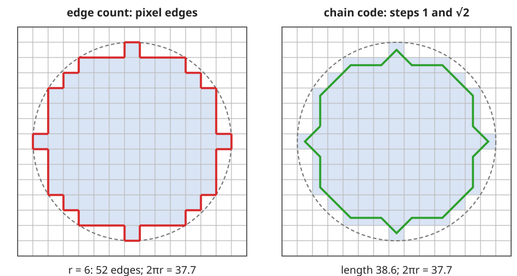
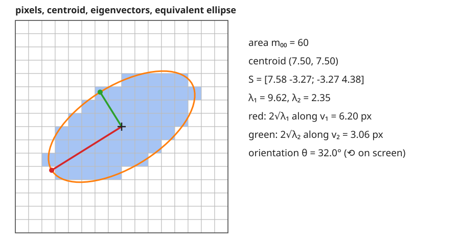

The last unit turned a mask into a label image. Now we measure each object: one row per label, one column per property.
Area, centroid, bounding box: sums over the pixels of the object.
Perimeter: three ways to count it, and why the simplest one is 27 % too long at any resolution.
Second moments: the covariance matrix of the pixel coordinates, its eigenvectors (orientation) and the equivalent ellipse: PCA of one object.
The Euler number: objects minus holes, counted from 2 × 2 patterns without labelling.
Slides titled The math give the formulas and proofs; the ideas are complete without them.
One scan, one row per object
Everything on this slide is a sum over the pixels\Omega_k of object k, so a single raster scan computes it for all labels at once.
AreaA = number of pixels (times the pixel area for µm²).
Centroid(\bar x, \bar y) = mean pixel position: the balance point of the object.
Bounding box: smallest and largest x and y. Extent = area / box area (1 for an axis-aligned rectangle, \pi/4 for a disc).
Touches the border: box reaches the image edge (truncated object, see the last unit of the day).
label
area
\bar x
\bar y
extent
…
1
690
31.50
31.50
…
2
…
…
…
…
The math: moments
Raw moments of object \Omega: \quad m_{pq} = \sum_{(x,y)\in\Omega} x^p y^q.
m_{00} = A, centroid \bar x = m_{10}/m_{00}, \bar y = m_{01}/m_{00}.
Central moments\mu_{pq} = \sum_{\Omega} (x - \bar x)^p (y - \bar y)^q do not change when the object is moved.
From the raw moments, without a second scan: \mu_{20} = m_{20} - m_{10}^2/m_{00}, \mu_{11} = m_{11} - m_{10} m_{01}/m_{00}, \mu_{02} = m_{02} - m_{01}^2/m_{00}.
These are the integrals \iint x^p y^q \, dx\,dy over the shape, turned into sums with one sample per pixel.
Perimeter: three estimates

Edge count (left): pixel edges between object and background. A staircase is as long as its two legs, so a digital disc gets about 8r instead of 2\pi r: 27 % too long, at every resolution.
Chain code (right): walk the boundary pixel centres with steps 1 and \sqrt 2: a few per cent off, depending on the direction.
Crofton: count crossings of the boundary with lines in 4 directions: within about 1 % for large objects. (Better step weights, or a sub-pixel contour, also work.)
The math: where 4/\pi comes from
A boundary segment of length \ell at angle \varphi is replaced by a staircase of \ell|\cos\varphi| horizontal and \ell|\sin\varphi| vertical pixel edges. For a closed convex curve all directions occur equally, so
Finer pixels make the staircase finer but not shorter: the error does not go away.
Cauchy–Crofton: P = \tfrac12 \int_0^\pi \int n(\theta, s)\,ds\,d\theta, with n the number of crossings of the line at angle \theta and offset s. With rows, columns and both diagonals (spacing 1 and 1/\sqrt2): P \approx \tfrac{\pi}{8}\big(n_0 + n_{90} + (n_{45} + n_{135})/\sqrt2\big).
Second moments: an object is a cloud of points
Recall from the PCA unit (day 1): for a cloud of points, the covariance matrixS holds the spreads; it is symmetric, its eigenvalues \lambda_1 \ge \lambda_2 \ge 0 (descending) are the variances along its orthogonal eigenvectors, the principal axes.
The pixels of an object are a cloud of points (x, y):
S = \frac{1}{A}\begin{pmatrix}\mu_{20} & \mu_{11}\\ \mu_{11} & \mu_{02}\end{pmatrix}.
\mathbf v_1: the direction in which the object is longest (the orientation); \mathbf v_2 perpendicular to it.
\sqrt{\lambda_1}, \sqrt{\lambda_2}: the spread of the pixels along these axes.
The equivalent ellipse

The ellipse with the same area, centroid and second moments as the object: semi-axes a = 2\sqrt{\lambda_1}, b = 2\sqrt{\lambda_2} along \mathbf v_1, \mathbf v_2.
Eccentricity\sqrt{1 - \lambda_2/\lambda_1}: 0 for a disc, near 1 for a rod. Elongation\sqrt{\lambda_1/\lambda_2} = ratio of the axes.
Major and minor axis length4\sqrt{\lambda_1}, 4\sqrt{\lambda_2}.
The math: orientation and the ellipse
Orientation. For S = \begin{pmatrix} a & b \\ b & c\end{pmatrix} the eigenvalues are \lambda_{1,2} = \frac{a + c}{2} \pm \sqrt{\big(\frac{a-c}{2}\big)^2 + b^2}, and \mathbf v_1 = (\cos\theta, \sin\theta) with
\theta = \tfrac12 \operatorname{atan2}(2b,\ a - c) = \tfrac12\operatorname{atan2}(2\mu_{11}, \mu_{20} - \mu_{02})
(from \tan 2\theta = 2b/(a - c), the condition that the off-diagonal entry vanishes after rotating by \theta). With y pointing down, \theta turns from x towards y, i.e. clockwise on screen; the orientation counter-clockwise on screen is -\theta.
Ellipse. A solid ellipse with semi-axes a, b has variance \frac{1}{\pi ab}\iint u^2 = a^2/4 along its major axis. So matching \lambda_1 = a^2/4 gives a = 2\sqrt{\lambda_1}. Check with a disc of radius r: \lambda = r^2/4, a = r.
Try it: moments of a shape
What the moments do and do not tell
Rotation of the object rotates the eigenvectors and leaves the eigenvalues unchanged: S = Q\Lambda Q^\top becomes (RQ)\Lambda(RQ)^\top. Area, eigenvalues, eccentricity: rotation invariant.
Equal eigenvalues (a disc, but also a square, a regular hexagon, a plus sign): every direction is a principal axis. The orientation is undefined, and noisy for nearly round objects: do not report it.
The ellipse is a summary, not the shape: an L, a ring and a solid ellipse can share it.
Invariants, in one line each: central moments (translation), normalised moments \mu_{pq}/m_{00}^{1+(p+q)/2} (scale), eigenvalues and Hu’s seven invariants (rotation). Higher moments and invariants: the moments elective.
The Euler number
Euler numberE = number of objects − number of holes (objects 8-connected, holes 4-connected).
A disc: 1; a ring: 0; the digit 8: −1; two discs: 2.
Counted by labelling: the objects, and the background components that do not touch the border (or via fill holes from the morphology day).
Surprise: E is local. Count the 2 \times 2 windows with exactly one object pixel (Q_1), with three (Q_3), and the diagonal pairs (Q_D): E = (Q_1 - Q_3 - 2Q_D)/4. One scan, no labelling (Gray, 1971).
Thinning (skeleton elective) must keep E: it may not cut objects or open holes. In 3D, E = objects − tunnels + cavities.
The math: why the bit-quads count E
Think of each object pixel as a closed unit square, and count corners (V), edges (E_d) and squares (F) of the union: Euler’s formula \chi = V - E_d + F gives objects − holes.
Each 2\times2 window is centred on one grid corner. A corner belongs to the union if any of its 4 squares is in the object; its contribution to V - E_d + F depends only on the window: +\frac14 for Q_1, 0 for Q_2 and Q_4, -\frac14 for Q_3.
A diagonal pair Q_D is the ambiguous case: with 8-connected objects the two squares are joined at the corner (-\frac12); with 4-connected objects they are not (+\frac12).
Sum over all windows (pad with background): E_8 = \tfrac14(Q_1 - Q_3 - 2Q_D), E_4 = \tfrac14(Q_1 - Q_3 + 2Q_D).
Summary
One scan gives a row per object: area, centroid, box, extent, raw and central moments.
Perimeter depends on the estimator: edge count \approx 4/\pi too long at any resolution; chain code a few %; Crofton \approx 1\,\%.
S = covariance of the pixel coordinates: PCA of one object. Eigenvectors: orientation; eigenvalues: spread; equivalent ellipse with semi-axes 2\sqrt{\lambda_i}.
Rotation changes S, not \lambda_1, \lambda_2; with \lambda_1 = \lambda_2 there is no orientation.
Euler number = objects − holes, from 2 × 2 patterns.
Next unit: shape beyond moments (convex hull, Feret diameters, form factor).